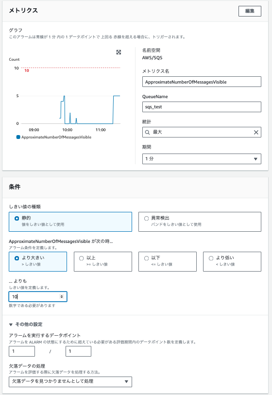
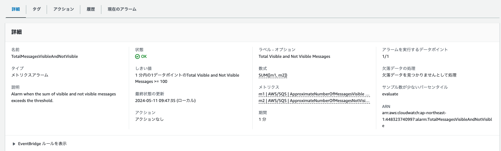

CloudWatchAlarm¶
CloudWatchのメトリクスを監視する、または複数のCloudWatchメトリクスに基づく数式結果を監視するアラームを作成することができる。アラームでは設定した閾値を超えた際にアクションを実行することができる。アクションの例としては、例えばSNSトピックを設定して通知を送ったり、AutoScalingの設定により処理性能を上げたりすることができる。
メトリクスアラームの状態¶
メトリクスアラームには大きく3つの状態がある
OK: メトリクスが定義されている閾値以内である
ALARM: メトリクスが定義されている閾値を超えている
INSUFFICIENT_DATA: メトリクスを取得できないためアラーム状態を判定できない
OK/ALARM/INSUFFICIENT_DATA城田の間で状態が変わった時全てに対してアラームを実行するアクションを指定可能。
INSUFFICIENT_DATA¶
メトリクスが取得的ていない場合に、アラームにおいて欠落データをどのように扱うかをアラームごとに定義することができる
NotBreaching: 「良好」とされて閾値内と判定される
Breaching: 「不良」とされて閾値を超えていると判定される
ignore: 現在のアラーム状態を引き継ぐ
missing: INSUFFICIENT_DATAへと移行する
デフォルトではmissingが指定されている
アラームの評価¶
以下3つの設定を行うことでアラームを発砲するかを判定する
期間
評価期間(Evaluation Period)
アラームを実行するデータポイント（Datapoints to Alarm）
データを集計する時間単位を「期間」で定義し、集計されたデータのアラーム判定「N個中M個(M/N)」を超えるとアラートを発砲する
期間¶
アラーム用のデータポイントをどの単位で集計して出力するかを定義する。 例えば、期間が300sec(5min)の場合、メトリクスとして出力される1分おきのデータについて5分をまとめて1つのデータとする。１つ目のデータは1~5分のデータから出力され、2つ目のデータは2~6分のデータから出力される。
N: 評価期間（Evaluation Period）¶
アラームを判定する際の評価範囲であり、分母になる値。 例えば、５が設定されている場合、直近の5個分のデータを対象にして評価を行う。
M: アラームを実行するデータポイント（Datapoints to Alarm）¶
アラームを判定する際、ALARMに遷移する際の超過するデータポイント数であり、分子になる値。 例えば、評価期間が５、データポイントが3に設定されている場合、直近の5個分のデータのなかで3個のデータが閾値を超えているとアラーム状態に遷移する。 また、評価期間が５、データポイントも5に設定されている場合、5個連続でデータが閾値を超えるとアラームが発砲される動きとなる。
メトリクスの作成¶
単独のメトリクスを利用したアラーム¶
アラーム作成に必要な設定をCloudFormationのリファレンスを見ながら解説していく。 CloudFormationのリファレンス
重要なものに抜粋すると以下
Type: AWS::CloudWatch::Alarm
Properties:
AlarmName: String
AlarmDescription: String
ActionsEnabled: Boolean
AlarmActions:
- String
ComparisonOperator: String
Threshold: Number
Period: Integer
EvaluationPeriods: Integer
DatapointsToAlarm: Integer
ExtendedStatistic: String
TreatMissingData: String
Namespace: String
MetricName: String
Dimensions:
- Dimension
Statistic: String
Metrics※:
- MetricDataQuery
それぞれのプロパティの役割は以下
プロパティ名 |
内容 |
|---|---|
AlarmName |
アラーム名 |
AlarmDescription |
アラームの説明 |
ActionsEnabled |
作成したアクションを有効にするか無効にするか |
AlarmActions |
アラームになった時に実行するアクション(OKActions/InsufficientDataActionsもある) |
ComparisonOperator |
閾値との比較演算子 |
Threshold |
閾値 |
Period※ |
統計が適用される期間(sec) |
EvaluationPeriods |
N: 評価期間 |
DatapointsToAlarm |
M: アラームを実行するデータポイント |
TreatMissingData |
欠落データの扱い定義 |
Namespace※ |
メトリクスの名前空間"AWS/SQS"など |
MetricName※ |
利用するメトリクスの定義"ApproximateNumberOfMessagesNotVisible"など |
Dimentions※ |
どのリソースに対してメトリクスを指定するかの定義 |
Statistic※ |
アラームに関連付けられたメトリックの統計方法（MaxやAverageなど） |
Metrics |
複数のメトリクスを利用して数式の結果に基づいてアラームを作成する。 |
最終的に作成されるアラームのイメージは以下。こちらと照らし合わせて設定値を確認すると理解しやすい。

複数のメトリクスの数式（Metrics）を利用したアラーム¶
複数のメトリクスを数式で組み合わせて一つのメトリクスとして定義し、アラートに利用することができる。 以下の例では、m1とm2としてSQSのApproximateNumberOfMessagesVisibleとApproximateNumberOfMessagesNotVisibleを定義して、その合計を一つのメトリクスとして、定義してその値をアラームにしている。

複数のメトリクスを組み合わせてアラームを作成する場合プロパティに"Metrics"を定義する。 "Metrics"を利用すると、その配下に利用するメトリクスの定義を行うため、アラームのプロパティでは"Period"/"Namespace"/"MetricName"/"Dimentions"/"Statistic"を定義しなくなる。
CloudFormationの設定イメージは以下
Metrics:
- MetricDataQuery（m1+m2などの数式の結果で最終的に利用したいメトリクス）
- MetricDataQuery(m1：通常の単独メトリクス)
- MetricDataQuery(m2：通常の単独メトリクス)
MetricDataQuery¶
Metricsでは以下のMetricDataQueryを配列で複数定義することで、利用するメトリクスの定義(MetricStat)、もしくは、それらのメトリクスを利用した数式の定義（Expression）が可能。最終的にアラームとして利用するメトリクスについてReturnDataをTrueとする。
Id: String
Label: String
ReturnData: Boolean
Expression: String
MetricStat:
MetricStat
それぞれのプロパティの役割は以下
プロパティ名 |
内容 |
|---|---|
Id |
定義するメトリクスの論理名で数式計算の時にはこの論理名で数式を書く |
Label |
人間向けのLabel |
ReturnData |
一つだけTrueとして定義し、その値がアラームのメトリクスとして利用される |
MetricStat※ |
利用するメトリクスについて定義する |
Expression※ |
MetricStatで定義したメトリクスを利用した数式を定義する |
MetricStat¶
MetricStatを利用して、計算に利用するメトリクスの定義を行う
Metric:
Namespace: String
MetricName: String
Dimensions: Dimension
Period: Integer
Stat: String
それぞれのプロパティの役割は以下
プロパティ名 |
内容 |
|---|---|
Metric |
利用するメトリクスの定義 |
Period |
統計が適用される期間(sec) |
Stat |
アラームに関連付けられたメトリックの統計方法（SumやAverageなど） |
CloudFormationの例¶
Metricsを利用して、SQSのメトリクスの合計値を一つのメトリクスとして定義してアラームを作成する際のCloudFormationの例は以下。以下をコピペして実行すれば単独で作成可能。
AWSTemplateFormatVersion: "2010-09-09"
Description: A template with only sqs_test queue and CloudWatch alarm
Resources:
SQSTestQueue:
Type: "AWS::SQS::Queue"
Properties:
QueueName: "sqs_test"
SQSMessagesTotalAlarm:
Type: "AWS::CloudWatch::Alarm"
Properties:
AlarmName: "TotalMessagesVisibleAndNotVisible"
AlarmDescription: "Alarm when the sum of visible and not visible messages exceeds the threshold."
ComparisonOperator: "GreaterThanOrEqualToThreshold"
EvaluationPeriods: 1
Threshold: 100
Metrics:
-
Id: "e1"
ReturnData: true
Expression: "SUM([m1, m2])"
Label: "Total Visible and Not Visible Messages"
-
Id: "m1"
ReturnData: false
Label: "Visible Messages"
MetricStat:
Metric:
Namespace: "AWS/SQS"
MetricName: "ApproximateNumberOfMessagesVisible"
Dimensions:
-
Name: "QueueName"
Value: !GetAtt SQSTestQueue.QueueName
Period: 60
Stat: "Maximum"
-
Id: "m2"
ReturnData: false
Label: "Not Visible Messages"
MetricStat:
Metric:
Namespace: "AWS/SQS"
MetricName: "ApproximateNumberOfMessagesNotVisible"
Dimensions:
-
Name: "QueueName"
Value: !GetAtt SQSTestQueue.QueueName
Period: 60
Stat: "Maximum"